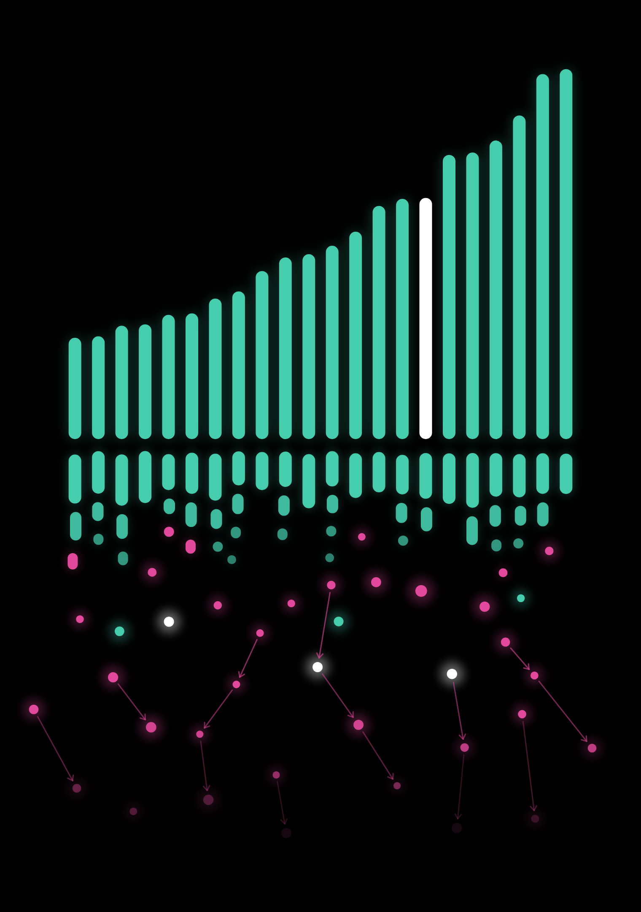

BACKUP
для вопросов · ответ — в заметках
41 Где мерили
42 Кто выбирает ядро
43 Плотные rowid
44 Слияние дельты
37 Другие языки
36 «Бенчмарк врал»: 3×3
45 Приоритет background
46 Точка перехода
47 Дрейф под нагрузкой
48 libstdc++ и libc++
49 Рабочий набор и кэш
50 sort + unique
51 Узловая таблица
35 Radix sort
52 reserve(N)
53 Честный замер
54 Шаги и их цена